| Verbotszeichen | |||
|---|---|---|---|
| D-P006 | Zutritt für Unbefugte verboten | ||
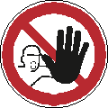 |
Bedeutung | Unbefugte Personen dürfen so gekennzeichnete Bereiche nicht betreten. | |
| Gefahr | Das Zeichen gibt keinen Hinweis auf die Art der bestehenden Gefahr. Es sagt lediglich aus, dass in so gekennzeichneten Bereichen nicht näher definierte Gefahren für Unbefugte bestehen. | ||
| Erwünschtes Verhalten | Beschäftigte sollen so gekennzeichnete Bereiche
nur betreten, wenn sie hierzu befugt sind, weil
|
||
| Hinweis(e) | |||
| Da das Zeichen selbst keine Aussage darüber enthält welche Gefahren in den so gekennzeichneten Betriebsbereichen bestehen, muss in der Kennzeichnung und/oder den Unterweisungen berücksichtigt werden, ob es im Betrieb so gekennzeichnete Bereiche gibt, in denen unterschiedliche Gefahren vorliegen. Über das generelle Zutrittsverbot für alle Unbefugten hinaus, muss die Unternehmerin/der Unternehmer in solchen Fällen sicherstellen, dass die befugten Personen wissen/erkennen können, welche der so gekennzeichneten Betriebsbereiche sie betreten dürfen. Eine Möglichkeit hierzu ist die Kombination mit Warnzeichen, die eine Aussage über konkrete Gefährdungen enthalten oder eine Kombination mit einem Zusatzzeichen(Text). | |||
| Beispiele für mögliche Kombinationen | |||
| 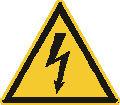 |
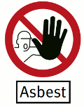 |
||
ISO 7010-P001 Allgemeines Verbotszeichen |
ISO 7010-P007 Kein Zutritt für Personen mit Herzschrittmachern oder implantierten Defibrillatoren |
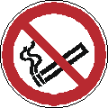 ISO 7010-P002 Rauchen verboten |
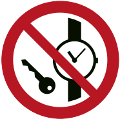 ISO 7010-P008 Mitführen von Metallteilen oder Uhren verboten |
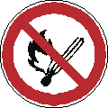 ISO 7010-P003 Keine offene Flamme; Feuer, offene Zündquelle und Rauchen verboten |
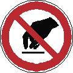 ISO 7010-P010 Berühren verboten |
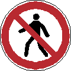 ISO 7010-P004 Für Fußgänger verboten |
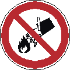 ISO 7010-P011 Mit Wasser löschen verboten |
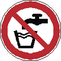 ISO 7010-P005 Kein Trinkwasser |
ISO 7010-P012 Keine schwere Last |
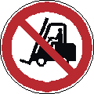 ISO 7010-P006 Für Flurförderzeuge verboten |
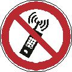 ISO 7010-P013 Eingeschaltete Mobiltelefone verboten |
ISO 7010-P014 Kein Zutritt für Personen mit Implantanten aus Metall |
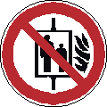 ISO 7010-P020 Aufzug im Brandfall nicht benutzen |
ISO 7010-P015 Hineinfassen verboten |
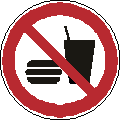 ISO 7010-P022 Essen und Trinken verboten |
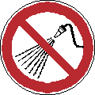 ISO 7010-P016 Mit Wasser spritzen verboten |
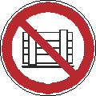 ISO 7010-P023 Abstellen oder Lagern verboten |
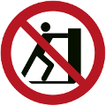 ISO 7010-P017 Schieben verboten |
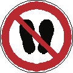 ISO 7010-P024 Betreten der Fläche verboten |
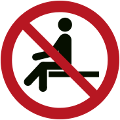 ISO 7010-P018 Sitzen verboten |
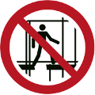 ISO 7010-P025 Benutzen des unvollständigen Gerüsts verboten |
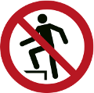 ISO 7010-P019 Aufsteigen verboten |
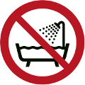 ISO 7010-P026 Verbot, dieses Gerät in der Badewanne, Dusche oder über mit Wasser gefülltem Becken zu benutzen |
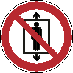 ISO 7010-P027 Personenbeförderung verboten |
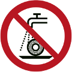 ISO 7010-P033 Nicht zulässig für Nassschleifen |
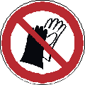 ISO 7010-P028 Benutzen von Handschuhen verboten |
ISO 7010-P034 Nicht zulässig für Freihand- und handgeführtes Schleifen |
ISO 7010-P029 Fotografieren verboten |
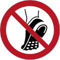 ISO 7010-P035 Metallbeschlagenes Schuhwerk verboten |
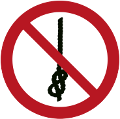 ISO 7010-P030 Knoten von Seilen verboten |
DIN 4844-2/ISO 7010 D-P006 Zutritt für Unbefugte verboten |
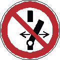 ISO 7010-P031 Schalten verboten |
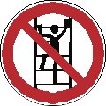 DIN 4844-2/ISO 7010 D-P022 Besteigen für Unbefugte verboten |
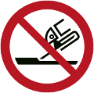 ISO 7010-P032 Nicht zulässig für Seitenschleifen |
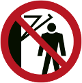 DIN 4844-2/ISO 7010 D-P023 Hinter den Schwenkarm treten verboten |
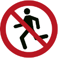 DIN 4844-2/ISO 20712-1 WSP001 Laufen verboten |